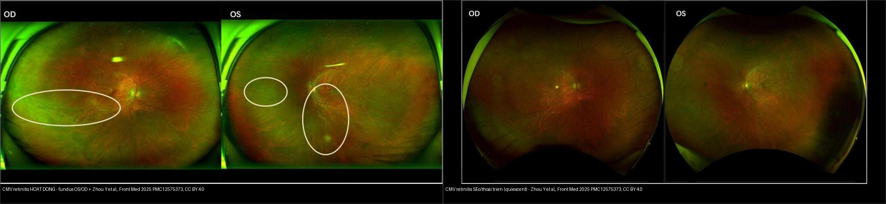
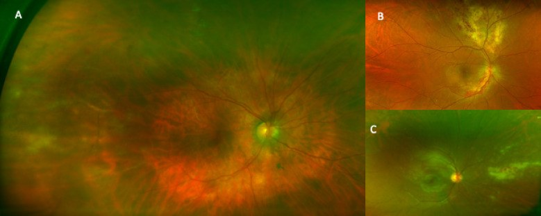
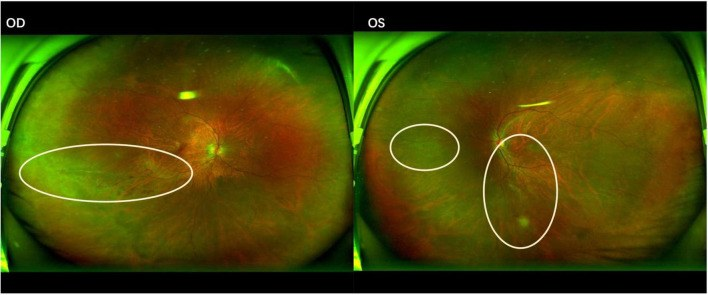
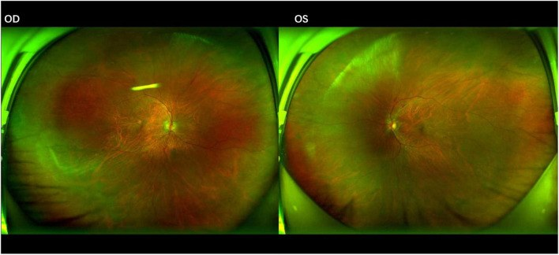
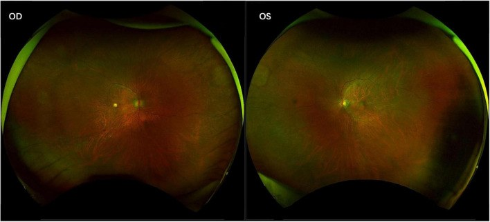

459 — Theo dõi dài hạn & tái hoạt CMV retinitis sau ghép: lịch sàng lọc UWF, ngưỡng CD4/viremia, khi nào ngừng kháng virus / Long-term monitoring & reactivation of CMV retinitis after transplantation
Tags: pattern:hoai-tu-vong-mac vung:vong-mac protocol:UWF protocol:PCR-dich-tien-phong protocol:theo-doi-sau-ghep incidentaloma:CMV-sau-ghep
Mức chắc chắn (certainty): tổng hợp y văn (literature synthesis) — nhóm tự biên từ y văn mở (J Clin Med 2026 CC BY 4.0; J Ophthalmic Inflamm Infect 2026 CC BY 4.0; Front Med 2025 CC BY 4.0; Ther Adv Ophthalmol 2026 CC BY-NC 4.0; World J Stem Cells 2025 CC BY-NC 4.0), chưa gắn một ca nguyên văn đơn lẻ xuyên suốt.
Vì sao bài này quan trọng: bài 452 (ARN & CMV retinitis) và 454 (viêm võng mạc–màng mạch ở người suy giảm miễn dịch KHÔNG HIV) dừng ở chẩn đoán + điều trị cảm ứng (induction). Nhưng CMV retinitis là bệnh của cả một hành trình miễn dịch: nguy cơ tái hoạt muộn, viêm mắt hồi phục miễn dịch (IRU), bong võng mạc (RRD) và câu hỏi "khi nào được ngừng thuốc" quyết định thị lực suốt đời. Đây là phần "sau khi tổn thương đã lành" mà người đọc phim/bệnh án dễ bỏ qua nhất.
1. Tổng quan — vì sao tái hoạt "bùng" đúng lúc miễn dịch thay đổi, và tại sao PCR máu có thể âm
- CMV retinitis (viêm võng mạc do cytomegalovirus) là nhiễm trùng cơ hội muộn, xảy ra khi tế bào T (đặc biệt CD4) suy giảm nặng. Sau ghép tế bào gốc (HCT) hoặc ghép tạng, nguy cơ đến từ ức chế miễn dịch iatrogenic + CMV huyết thanh dương trước ghép + thuốc ức chế tế bào T/monoclonal antibody.
- Cơ chế hình ảnh (TẠI SAO): CMV theo máu đến võng mạc → hoại tử võng mạc + viêm mạch + xuất huyết → đám vàng–trắng kèm xuất huyết, lan dọc mạch ("brushfire"), ít thâm nhiễm dịch kính. Vì miễn dịch suy nên ít viêm — khác hẳn ARN (phản ứng viêm mạnh). Hoạt tính trên ảnh = "bờ đang tiến triển"; lành = teo–sẹo võng mạc bờ rõ.
- Số liệu nằm lòng:
- Sàng lọc chủ động bằng chụp võng mạc góc siêu rộng (UWF) sau ghép tế bào gốc đồng loài (allo-HSCT): 39 bệnh nhân có CMV tái hoạt được chụp UWF → 1 ca CMVR không triệu chứng (2,6%), xuất hiện 251 ngày sau ghép; PCR CMV máu ÂM tại thời điểm chẩn đoán võng mạc nhưng PCR dịch tiền phòng (aqueous) xác định CMV → phát hiện sớm, điều trị kịp, tổn thương lành hoàn toàn.
- Loạt auto-HCT (ghép tế bào gốc tự thân): 6 ca CMVR, tuổi trung vị 63; 100% CMV-IgG dương trước ghép; CMV DNAemia 66,7%; hai mắt 66,7%; 66,67% dùng corticoid liều cao; 83,33% dùng monoclonal antibody trước phát bệnh; điểm chung là lymphopenia kéo dài + CD4 rất thấp.
- Ngưỡng CD4 (HIV): nguy cơ 6,89/100 người–năm khi CD4 < 50 tế bào/µL, HR 136 (95% CI 30–605) cho CMVR về sau; rất ít ca xảy ra khi CD4 ≥ 50.
- Khác biệt HIV vs không HIV: phân tích 117 mắt/91 bệnh nhân (71 mắt/58 ca HIV+; 46 mắt/33 ca HIV−) — nhóm không HIV không có một ngưỡng CD4 đồng nhất; giảm IgG (hypogammaglobulinemia) là bất thường miễn dịch hay gặp hơn cả CD4 thấp.
- Hệ quả thực hành: với bệnh nhân không HIV, không thể dựa vào một con số CD4 để quyết định sàng lọc/ngừng thuốc — phải đánh giá toàn bộ quỹ đạo miễn dịch (lymphocyte, IgG, mức ức chế miễn dịch, tiền sử CMV) và theo dõi hình ảnh chủ động.
2. Mẫu hình + chẩn đoán phân biệt theo mức miễn dịch (gamut)
Câu hỏi lọc: "Tổn thương hoại tử võng mạc — viêm nhiều hay ít?" → viêm ít + suy giảm T nặng = CMV; viêm nhiều + người tương đối khỏe = ARN.
Gamut "hoại tử võng mạc ở người suy giảm miễn dịch":
- CMV retinitis — HIV CD4 < 50; sau HCT/ghép tạng (thể non-HIV, ít CD4 thấp hơn nhưng giảm IgG); trẻ sau ghép; thể "bờ hoạt động" (advancing border) vs "teo–sẹo lành" (inactive).
- ARN (hoại tử võng mạc cấp, VZV/HSV) — viêm dịch kính + viêm tắc mạch nổi bật, tổn thương ngoại vi liên tục lan (bài 452).
- PORN (hoại tử võng mạc tiến triển ngoài mắt) — nhiều ổ sâu, tiên lượng xấu.
- Viêm võng mạc do Toxoplasma/syphilis/lao — nhiều ổ, có thể kèm viêm màng bồ đào.
- Nấm nội nhãn (Candida) — nốt "fluff-ball" trong dịch kính, bối cảnh nhiễm khuẩn huyết/đường truyền (bài 451).
- Lymphoma nội nhãn (masquerade) — thâm nhiễm dưới biểu mô sắc tố dai dẳng, không đáp ứng kháng virus (một lỗ hổng còn lại — xem BACKLOG).
- Vị trí gợi ý: CMV hay ở cực sau/dọc mạch ("bánh pizza") và vùng quanh mạch (periphlebitis); ARN hay ngoại vi lan về trung tâm.
3. Bảng so sánh phân biệt (ma trận đối chiếu)
| Tình trạng (entity) | Hình ảnh điển hình (UWF đáy mắt / OCT) | Chốt vào (rule-in) | Chốt loại (rule-out) | Gợi ý xác nhận |
|---|---|---|---|---|
| CMV retinitis — bờ HOẠT ĐỘNG | Đám vàng–trắng + xuất huyết dọc mạch ("brushfire"), ít viêm dịch kính; bờ đang tiến triển | Suy giảm miễn dịch nặng (CD4 < 50 / sau ghép) + ít viêm + tổn thương dọc mạch | Viêm dịch kính nổi bật + viêm tắc mạch → ARN | PCR CMV dịch tiền phòng/dịch kính (PCR máu có thể ÂM); UWF |
| CMV retinitis — LÀNH/SẸO | Vùng teo–sẹo bờ rõ, mất tế bào sắc tố, không xuất huyết mới | Tổn thương ổn định qua 2 lần chụp + bờ không tiến triển + không xuất huyết mới | Bờ đang rộng ra / xuất huyết mới → tái hoạt | So ảnh UWF nối tiếp theo thời gian |
| ARN (VZV/HSV) | Hoại tử ngoại vi liên tục + viêm dịch kính + viêm tắc mạch; đau | Viêm nặng + viêm tắc mạch + người tương đối khỏe/1 bên | Ít viêm + CD4 thấp → CMV | PCR VZV/HSV dịch tiền phòng (bài 452) |
| IRU (viêm mắt hồi phục miễn dịch) | Viêm tăng lên trong lúc CD4 hồi phục (ART), dịch kính/hoàng điểm phù, trên nền tổn thương CMV đã lành | Tổn thương CMV đang lành + CD4 tăng nhanh + viêm mới không do virus nhân lên | Tổn thương hoại tử mới/rộng ra → tái hoạt CMV thật | Loại trừ tái hoạt (PCR), OCT; không tăng kháng virus mù |
| Nấm nội nhãn (Candida) | Nốt trắng "fluff-ball" nhô vào dịch kính, tổn thương nhỏ nhiều ổ | Bối cảnh nhiễm nấm huyết/catheter + nốt dịch kính | Bờ hoại tử dọc mạch rộng → CMV/ARN | Soi/cấy máu, PCR nội nhãn |

Trái: hoạt động — tổn thương hoại tử bờ đang tiến triển theo mạch (khoanh trắng), OD & OS (Zhou Y et al., Front Med 2025, PMC12575373, CC BY 4.0). Phải: seo/quiescent — võng mạc teo lành, không xuất huyết mới (cùng nguồn). Chốt theo dõi = so ảnh nối tiếp theo thời gian, không đọc "một ảnh đơn". Ảnh ghép letterbox.Quiz composite: hai ảnh là cùng một bệnh nhân ở hai thời điểm. Ảnh nào chứng minh "còn hoạt động"? Muốn chứng minh ảnh phải là "tái phát" (relapse) chứ không phải "di chứng ổn định" thì cần gì?
Bấm để hiện đáp án
- Trái = đang hoạt động (bờ hoại tử + xuất huyết mới dọc mạch); Phải = sẹo ổn định (teo lành, không xuất huyết).
- "Tái hoạt" (reactivation) = tiến triển so với lần chụp trước (bờ rộng ra, xuất huyết/tổn thương mới), không phải chỉ "thấy tổn thương cũ". → Phải có so sánh chuỗi UWF theo thời gian (đây là lý do bắt buộc lưu ảnh nền tảng).
- Phân biệt với IRU: viêm tăng khi CD4 hồi phục nhưng tổn thương CMV vẫn lành — đừng tăng kháng virus mù.
4. Protocol theo dõi + tiêu chuẩn ngừng kháng virus + xử trí
Theo dõi hình ảnh — "chụp bằng gì, bao lâu":
- Chụp võng mạc góc siêu rộng (UWF, ultra-widefield): công cụ sàng lọc chủ động ở nhóm nguy cơ cao (HCT/ghép tạng có CMV tái hoạt); phát hiện tổn thương ngoại vi mà soi đáy mắt thường bỏ sót; lưu ảnh nền tảng để so sánh lần sau.
- PCR dịch tiền phòng/dịch kính: khi nghi ngờ/không rõ hoặc thị lực đe dọa → lấy mẫu song song điều trị; PCR CMV máu có thể ÂM dù tổn thương võng mạc đang tiến triển (không loại trừ CMVR).
- OCT hoàng điểm + siêu âm B (khi không thấy đáy mắt): theo dõi tổn thương hoàng điểm, dính dịch kính–võng mạc, bong võng mạc.
- Theo dõi lâm sàng–miễn dịch: CD4 (HIV), IgG/lymphocyte, mức ức chế miễn dịch, CMV DNAemia định lượng; theo dõi IRU, RRD, thiếu máu võng mạc.
Điều trị & thời điểm ngừng (khung):
- Cảm ứng (induction): valganciclovir 900 mg × 2/ngày (hoặc ganciclovir IV 5 mg/kg q12h) tối thiểu 14–21 ngày và tới khi đáp ứng võng mạc đủ — "một khoảng thời gian lịch" không đủ để chuyển duy trì; tổn thương đe dọa hoàng điểm (trong 1500 µm quanh hoàng điểm/đĩa thị) → phối hợp tiêm nội nhãn + đánh giá khẩn.
- Duy trì (maintenance): valganciclovir liều duy trì, chỉnh theo chức năng thận; tiếp tục chừng nào còn nguy cơ tái hoạt.
- Ngừng duy trì — khác nhau theo chủ thể:
- HIV: có thể xét ngừng khi đã điều trị kháng CMV ≥ 3 tháng + tổn thương võng mạc không còn hoạt động + CD4 ≥ 100 tế bào/µL duy trì ≥ 3 tháng nhờ ART, có đồng thuận nhãn khoa (hướng dẫn NIH).
- Không HIV (ghép tạng/HCT): cá thể hóa, không có ngưỡng CD4 phổ quát; dựa vào quỹ đạo miễn dịch và nguy cơ tái phát; đánh giá lại trước khi siêu ức chế miễn dịch (thường phải duy trì lâu hơn).
- Sau khi ngừng: theo dõi mắt ít nhất mỗi 3 tháng lúc đầu, có thể chuyển hàng năm khi miễn dịch hồi phục bền và ổn định lâm sàng.
flowchart TD
A[BN sau ghep tang/HCT co CMV tai hoat hoac suy giam mien dich nang] --> B[Sang loc chu dong: chup UWF + luu anh nen tang]
B --> C{Co ton thuong hoat dong?}
C -->|Khong ro / thi luc de doa| D[PCR dich tien phong-dich kinh: PCR MAU co the AM]
C -->|Co bo dang tien trien| E[CAM UNG valganciclovir 900 mg x2 >=14-21 ngay den khi dap ung]
D -->|PCR CMV duong| E
E --> F{Ton thuong lanh chua?}
F -->|Chua| E
F -->|Da lanh| G[Chuyen DUY TRI - tiep tuc khi con nguy co tai hoat]
G --> H{HIV hay khong HIV?}
H -->|HIV| I[Cân nhac ngung: >=3 thang dieu tri + ton thuong lanh + CD4 >=100 >=3 thang tren ART]
H -->|Khong HIV| J[Ca the hoa - KHONG co nguong CD4 pho quat - danh gia lai truoc khi sieu uc che]
I --> K[Theo doi sau ngung: >=3 thang/lan, sau do hang nam khi hoi phuc mien dich ben]
J --> K
K --> L[Canh giac: tai hoat, IRU, bong vong mac, ton thuong hoang diem]
5. Biến thể bình thường và cạm bẫy
- PCR CMV máu âm không loại trừ CMVR: đã gặp ca PCR máu âm nhưng PCR dịch tiền phòng dương (ngày 251 sau allo-HSCT) → nghi cao thì lấy dịch nội nhãn, không dừng ở PCR máu.
- Tổn thương ngoại vi bị bỏ sót: soi đáy mắt/ảnh chụp hẹp bỏ sót tổn thương ra ngoài rìa → UWF và chụp góc rộng là chìa khóa; luôn khám hai mắt (66,7% hai mắt trong loạt auto-HCT).
- IRU giả "thất bại điều trị": viêm tăng khi CD4 hồi phục không phải virus kháng thuốc → không tăng kháng virus mù; phân biệt bằng bờ tổn thương + PCR.
- Không có ngưỡng CD4 phổ quát ở người không HIV: áp ngưỡng CD4 của HIV cho bệnh nhân ghép tạng/HCT (giảm IgG, lymphopenia) → bỏ sót hoặc ngừng thuốc quá sớm.
- "Ít ca nên khỏi cần sàng lọc"? Incidence CMVR không triệu chứng thấp (2,6%) nhưng hậu quả mù không hồi phục; sàng lọc hướng nhóm nguy cơ cao (CMV tái hoạt, corticoid liều cao, monoclonal antibody) — cân nhắc nguồn lực (chưa có khoảng sàng lọc chuẩn cho trẻ).
- Sẹo cũ bị đọc nhầm tái hoạt: chỉ gọi tái hoạt khi có tiến triển so với ảnh trước (bờ rộng ra/xuất huyết mới) — nếu không có ảnh nền tảng, dễ tăng thuốc oan.
- Sau khi ngừng kháng virus: nguy cơ RRD, IRU, tổn thương hoàng điểm vẫn tiếp diễn → theo dõi tiếp, không "xong bệnh".
6. Tự lượng giá — Blind Quiz
Ca 1 — Bệnh nhân allo-HSCT, có CMV tái hoạt, không triệu chứng mắt, được sàng lọc UWF. Đáy mắt:

- Hỏi: mô tả tổn thương? Vì sao chụp UWF lại phát hiện được? Nếu chỉ làm PCR máu thì sao?
Bấm để hiện đáp án (findings + chẩn đoán)
- Dấu hiệu (findings): (A) kiểu viêm quanh mạch (periphlebitis) ngoại vi + xuất huyết trong võng mạc; các kiểu khác (B, C) — tổn thương hoại tử ngoại vi.
- Chẩn đoán (diagnosis): CMV retinitis không triệu chứng — phát hiện nhờ UWF sàng lọc; ca gốc xuất hiện 251 ngày sau allo-HSCT, PCR CMV máu ÂM, xác định bằng PCR dịch tiền phòng.
- Ý nghĩa: sàng lọc chủ động ở nhóm nguy cơ cao + UWF bắt được tổn thương ngoại vi mà khám thường bỏ sót.
- Nguồn ảnh: Moll-Udina A et al., J Ophthalmic Inflamm Infect 2026 (PMC13265437) Fig. 1, CC BY 4.0.
Ca 2 — Bệnh nhân auto-HCT, nhìn mờ, tổn thương đáy mắt hai bên đang hoạt động:

- Hỏi: tổn thương ở đâu (khoanh trắng)? Nghĩ bệnh gì? Cần hỏi gì về tiền sử ghép?
Bấm để hiện đáp án (findings + chẩn đoán)
- Dấu hiệu (findings): tổn thương dọc mạch (khoanh trắng, cả OD & OS), bờ đang tiến triển — kiểu hao mòn/xuất huyết ("hemorrhagic") lan theo arcade mạch.
- Chẩn đoán (diagnosis): CMV retinitis sau auto-HCT (loạt 6 ca: tuổi trung vị 63; 100% CMV-IgG+; 66,67% corticoid liều cao; 83,33% monoclonal antibody; lyphopenia + CD4 thấp).
- Cần hỏi: thời điểm ghép, thuốc ức chế miễn dịch, CMV DNAemia, IgG — vì không có ngưỡng CD4 phổ quát ở người không HIV.
- Nguồn ảnh: Zhou Y et al., Front Med 2025 (PMC12575373) Fig. 1, CC BY 4.0.
Ca 3 — Cùng bệnh nhân sau 1 tháng kháng virus:

- Hỏi: so với lần trước thay đổi gì? Đã được chuyển duy trì hay ngừng thuốc chưa?
Bấm để hiện đáp án (findings + chẩn đoán)
- Dấu hiệu (findings): giảm diện hoại tử và xuất huyết, bờ thoái triển so với ảnh hoạt động → đang đáp ứng điều trị.
- Ý nghĩa: vẫn DUY TRÌ — chuyển/ngừng chỉ khi tổn thương lành và (nếu HIV) CD4 ≥ 100 trong ≥ 3 tháng trên ART; người không HIV cá thể hóa.
- Nguồn ảnh: Zhou Y et al. (PMC12575373) Fig. 2, CC BY 4.0.
Ca 4 — Đáy mắt giai đoạn muộn, không xuất huyết mới:

- Hỏi: đây là hoạt động hay di chứng? Làm sao khẳng định "không tái hoạt"? Còn cảnh giác gì dù đã lành?
Bấm để hiện đáp án (findings + chẩn đoán)
- Dấu hiệu (findings): teo–sẹo võng mạc bờ rõ, tế bào sắc tố mất, không xuất huyết/tổn thương mới → giai đoạn không hoạt động (quiescent).
- Khẳng định không tái hoạt: so ảnh UWF nối tiếp (bờ không tiến triển, không tổn thương mới) + ổn định miễn dịch.
- Còn cảnh giác: IRU, bong võng mạc (RRD), tổn thương hoàng điểm, thiếu máu võng mạc — theo dõi tiếp sau khi ngừng kháng virus (≥ 3 tháng/lần lúc đầu → hàng năm khi miễn dịch hồi phục bền).
- Nguồn ảnh: Zhou Y et al. (PMC12575373) Fig. 3, CC BY 4.0.
Ca 5 — Bệnh nhân suy giảm miễn dịch, đang hoạt động — quyết định điều trị & theo dõi:

- Hỏi: lưu đồ phân biệt "thoát duy trì ở HIV" và "không HIV" thế nào? Sau khi ngừng, theo dõi ra sao?
Bấm để hiện đáp án (findings + chẩn đoán)
- Khung: (1) đánh giá tình trạng miễn dịch + hoạt tính võng mạc + dung nạp thuốc; (2) chọn điều trị theo tổn thương ngoại vi / đe dọa thị lực (trong 1500 µm) / kháng thuốc–dung nạp; (3) chuyển duy trì khi tổn thương lành; (4) HIV: xét ngừng khi ≥ 3 tháng điều trị + tổn thương lành + CD4 ≥ 100 ≥ 3 tháng trên ART; không HIV: cá thể hóa, không ngưỡng CD4 phổ quát.
- Sau ngừng: theo dõi ≥ 3 tháng/lần lúc đầu → hàng năm khi miễn dịch hồi phục bền; cảnh giác tái hoạt, IRU, RRD.
- Nguồn ảnh: J Clin Med 2026 (PMC13665908) Fig. 1, CC BY 4.0 (không ghi tên tác giả — Europe PMC không trả authorString).
Bài liên quan chéo
- 400 – Tổng quan Mắt & thị giác
- 452 – Hoại tử võng mạc cấp (ARN) & CMV retinitis (chẩn đoán + điều trị cảm ứng)
- 454 – Viêm võng mạc–màng mạch ở người suy giảm miễn dịch KHÔNG HIV (ghép tạng, ung thư máu)
- 451 – Biểu hiện mắt của bệnh hệ thống (nấm nội nhãn, lymphoma masquerade)
- 411 – Siêu âm nhãn cầu (khi không thấy đáy mắt)
Ảnh
459_uwf-periphlebitis_PMC13265437-Fig1-CCBY.jpg— Moll-Udina A et al., J Ophthalmic Inflamm Infect 2026 (PMCID: PMC13265437) Fig. 1, CC BY 4.0.459_cmv-hoat-dong_Fundus_PMC12575373-Fig1-CCBY.jpg— Zhou Y et al., Front Med 2025 (PMCID: PMC12575373) Fig. 1, CC BY 4.0.459_cmv-thoai-trien_Fundus_PMC12575373-Fig2-CCBY.jpg— Zhou Y et al. (PMC12575373) Fig. 2, CC BY 4.0.459_cmv-seo_Fundus_PMC12575373-Fig3-CCBY.jpg— Zhou Y et al. (PMC12575373) Fig. 3, CC BY 4.0.459_lo-trinh-cmvr_PMC13665908-Fig1-CCBY.jpg— J Clin Med 2026 (PMCID: PMC13665908) Fig. 1, CC BY 4.0 (không ghi tên tác giả).composite_cmv-hoat-dong-vs-seo.jpg— ghép Fig. 1 + Fig. 3 (PMC12575373) bằngtools/make_composite.py.- Chi tiết giấy phép từng ảnh trong
images/CREDITS.md. AuntMinnie: chỉ dẫn link, không tải.
Không dùng để chẩn đoán độc lập khi chưa có người hướng dẫn.